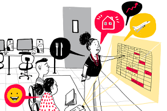

O dinheiro é um aspecto fundamental das nossas vidas, e dominar as finanças pessoais é essencial para viver uma vida sem stress e realizadora. Infelizmente, muitas pessoas lutam com a gestão do dinheiro, levando ao stress financeiro e à dívida.
No mundo atual, onde a estabilidade financeira é mais crítica do que nunca, é essencial assumir o controle das suas finanças e aprender a gerir e fazer crescer o seu dinheiro de forma eficaz. É por isso que o tema "Domine o seu dinheiro" é tão importante.
